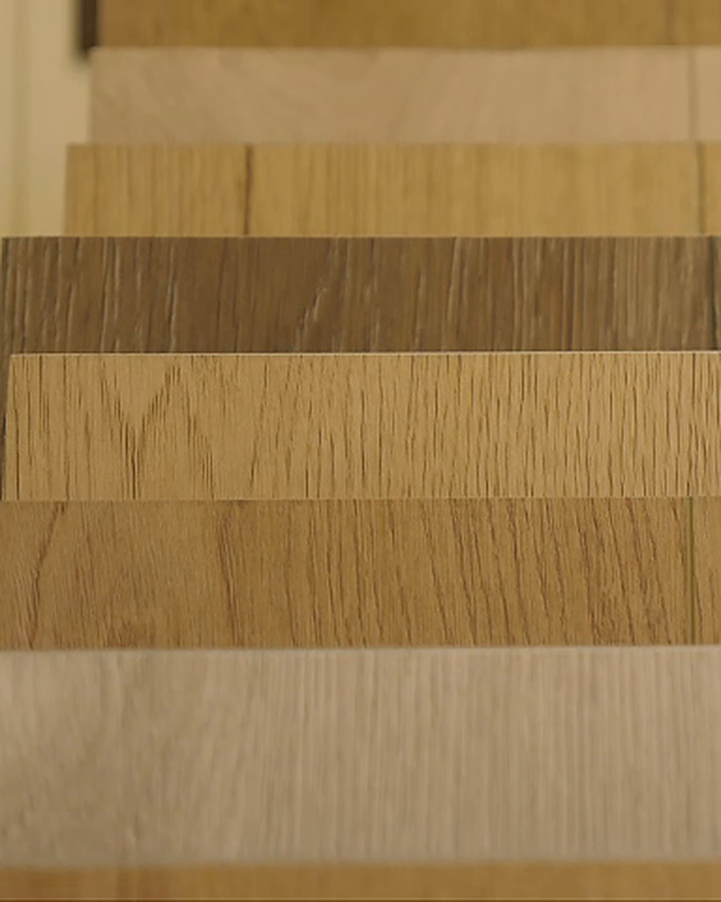
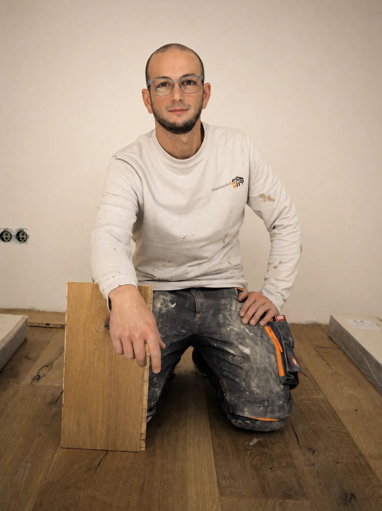

Laminat in Wermelskirchen
Kratzfest, pflegeleicht und meist günstiger als Parkett: Wir beraten, liefern und verlegen Laminat, mit passender Trittschalldämmung und sauberen Anschlüssen.
Für Wohnungen, Häuser, Mietobjekte und Büros in Wermelskirchen, Remscheid, Solingen, Wuppertal, Burscheid, Bergisch Gladbach und Köln. Größere Projekte übernehmen wir deutschlandweit.
Was Laminat kann und was nicht
Stärken und Grenzen stecken im Aufbau: oben eine harte Schutzschicht, im Kern Holzfaser.
Wie die Zeichnung oben zeigt: harte Deckschicht aus Melaminharz, gedrucktes Dekor, Trägerplatte aus hochverdichteter Holzfaser (HDF) mit Klickverbindung, Gegenzug. Daraus ergibt sich, was Laminat kann und was ihm schadet.
Was Laminat kann
- Kratz- und abriebfest
- Steckt Stuhlbeine, Spielzeug und Straßenschuhe besser weg als Holz. Wie viel, zeigt die Nutzungsklasse.
- Pflegeleicht und lichtbeständig
- Saugen, nebelfeucht wischen, nie ölen. Das Dekor bleicht in der Sonne kaum aus.
- Schnell verlegt, wieder lösbar
- Geklickt und schwimmend verlegt, ohne Kleber, später ohne Rückstände ausbaubar.
- Meist günstiger als Parkett
- Worauf es beim Sparen ankommt, lesen Sie weiter unten.
Was Laminat nicht verträgt
- Nässe in den Fugen
- Die Holzfaser im Kern quillt, die Kanten heben sich, und das geht nicht zurück. Im Bad deshalb lieber Vinyl.
- Feuchte von unten
- Auf mineralischem Estrich gehört eine Dampfbremse unter die Dämmung. Die Feuchte prüfen wir vorher.
- Abschleifen
- Das Dekor ist bedrucktes Papier. Eine beschädigte Diele wird ausgetauscht.
- Feste Einbauten
- Ein schwimmender Boden braucht Abstand zur Wand und Bewegungsfugen. Eine schwere Küchenzeile gehört nicht darauf.

Worauf Sie beim Dekor achten
Laminat gibt es in Holz- und Steinoptik, von hell bis dunkel. Ob es natürlich wirkt, entscheiden Format, Kante und Oberfläche.
Das Bild ist gedruckt, die Auswahl entsprechend groß. Im Prospekt sehen sich viele Dekore ähnlich, im Raum machen diese Details den Unterschied:
- Format
- Lange, breite Dielen lassen große Räume ruhig wirken, schmalere passen in kleinere Zimmer.
- Fase
- Eine abgeschrägte Kante zeichnet jede Diele nach wie bei Parkett, ohne Fase wirkt die Fläche geschlossener.
- Oberfläche
- Strukturiert fühlt sie sich holziger an, matt zeigt sie weniger Staub und feine Kratzer.
- Ihr Licht
- Sehen Sie ein Dekor möglichst bei Tages- und Lampenlicht an. Beim Verlegen mischen wir Pakete, damit sich gleiche Bilder nicht wiederholen.
Für welche Räume Laminat passt
In Wohn- und Schlafräume, Büros und Mietwohnungen. Ins Bad gehört es nicht.
Wählen Sie einen Raum. Hier erscheint dann, ob Laminat passt und welche Nutzungsklasse sinnvoll ist.
- Nutzungsklasse
Darauf achten:
Raum und Bodenart werden ins Anfrageformular übernommen.
Richtwerte ohne Besichtigung. Ob Laminat zu Ihrem Untergrund und Ihrer Nutzung passt, klären wir beim Termin vor Ort.
Alle Räume im Überblick
| Raum | Passt Laminat? | Nutzungsklasse (Richtwert) | Darauf achten |
|---|---|---|---|
| Wohn- und Esszimmer | Gut geeignet | 22 oder höher, bei viel Betrieb 23 | Filzgleiter unter Stuhl- und Tischbeine. Das Dekor am besten im eigenen Licht ansehen. |
| Schlaf- und Kinderzimmer | Gut geeignet | 21 oder höher im Schlafzimmer, 23 im Kinderzimmer | Laminat ist hart. Zum Spielen auf dem Boden ist ein Teppich angenehm. Wer es insgesamt leiser mag, fragt nach Vinyl. |
| Küche | Nur mit Vorsicht | 23 oder höher | Eine schwere Küchenzeile sollte nicht auf schwimmend verlegtem Laminat stehen. Wo der Boden endet, legen wir beim Aufmaß fest. |
| Bad | Nicht empfohlen | – | Es gibt Laminat, das für Feuchträume angeboten wird. Ob es zu Ihrem Bad passt, prüfen wir gern. Die sichere Wahl bleibt Vinyl. |
| Flur und Eingang | Im Flur gut, am Eingang mit Schmutzfang | 23 oder höher | Wo der Eingang oft nass wird, ist Vinyl die entspanntere Wahl. |
| Büro oder Laden | Gut geeignet, mit Gewerbeklasse | 31 oder höher im Büro, 32 oder 33 bei viel Kundschaft | Unter Bürostühlen weiche Rollen für Hartböden oder eine Schutzmatte. Am Eingang eine Schmutzfangzone. |
| Keller | Nur wenn der Raum trocken ist | je nach Nutzung des Raums | Der Untergrund muss dauerhaft trocken bleiben, auch im Sommer, wenn sich in Kellern leicht Feuchtigkeit niederschlägt. |
Richtwerte ohne Besichtigung. Ob Laminat zu Ihrem Untergrund und Ihrer Nutzung passt, klären wir beim Termin vor Ort.
Was die Nutzungsklasse sagt
Sie steht auf Packung und Datenblatt: 21 bis 23 für Wohnräume, ab 31 für gewerbliche Räume. Je höher, desto mehr Betrieb hält der Boden aus. Die Abriebklasse (AC) beschreibt, wie widerstandsfähig die Deckschicht ist.
Die Unterlage macht den Klang
Wie leise Laminat ist, hängt nicht nur an der Diele, sondern vor allem daran, worauf sie liegt.
Laminat liegt schwimmend auf einer Dämmunterlage. Sie gleicht kleine Unebenheiten aus, entlastet die Klickverbindung und dämpft zwei Arten von Schall.
Trittschall
Was Schritte durch die Decke in den Raum darunter leiten, zu den Nachbarn oder ins eigene Wohnzimmer. Eine gute Trittschalldämmung verringert ihn deutlich.
Gehschall
Das Klacken im Raum selbst. Ihn mindern Unterlagen, die dicht an der Diele anliegen, bei manchem Laminat schon auf der Unterseite.
Welche Unterlage passt, hängt vom Untergrund (auf Estrich mit Dampfbremse), von der Fußbodenheizung, von der Lage des Raums und vom Laminat selbst ab. Zu weiche Unterlagen schaden der Klickverbindung, der Hersteller gibt vor, was passt.

Für Mietwohnung und Büro
Wo Mieter wechseln oder viele Menschen laufen, zählt ein Boden, der viel aushält und schnell liegt.
Für Vermieter und Eigentümer
Zwischen zwei Mietverhältnissen ist die Zeit knapp. Laminat ist zügig verlegt, ein ruhiges Holzdekor passt zu fast jeder Einrichtung, und die harte Oberfläche steckt Umzüge gut weg. Alten Belag raus, Untergrund prüfen, neu verlegen, mit Leisten und guter Trittschalldämmung.
Bewahren Sie nach der Verlegung ein paar übrige Dielen auf. Wird später eine beschädigt, lässt sie sich im selben Dekor ersetzen.
Für Büros und Gewerbeflächen
Hier braucht Laminat eine Gewerbeklasse, je nach Betrieb 31 bis 33, dazu weiche Stuhlrollen und eine Schmutzfangzone am Eingang. Den Zeitplan stimmen wir so ab, dass Ihr Betrieb möglichst wenig gestört wird.
Für Ihr Objekt anfragenWo sich Sparen lohnt
Wir sagen Ihnen offen, wo Sie sparen können und wo nicht. Fragen Sie uns ruhig, wo es günstiger geht.
Hier können Sie sparen
- Beim Dekor
- Besondere Formate, aufwendige Prägungen und ausgefallene Dekore kosten mehr, halten aber nicht länger. Wie lange ein Boden schön bleibt, entscheidet die Nutzungsklasse.
- Bei der Klasse, wo wenig los ist
- Im Schlaf- oder Gästezimmer genügt eine niedrigere Nutzungsklasse. Im Flur, Kinderzimmer und Büro lohnt die höhere.
Hier lohnt es sich nicht
- An der Unterlage
- Sie entscheidet über den Klang und über die Lebensdauer der Klickverbindung. Eine zu dünne oder zu weiche Unterlage hören Sie jeden Tag.
- Am Untergrund
- Unebenheiten zeigen sich bei Laminat als Federn, Knacken oder offene Fugen. Was der Untergrund braucht, steht vorher im Angebot.
- An den Kanten
- Sockelleisten und Übergangsprofile machen den Boden fertig. Eine offene Fuge an der Tür sieht man jeden Tag.
Schwimmend heißt nicht: auf alles. Größere Mulden lassen den Boden federn und knacken. Wir prüfen Ebenheit, Festigkeit und Feuchte und machen passend, was nicht passt. Feste, ebene Fliesen können oft liegen bleiben. Mehr zur Untergrundvorbereitung
So verlegen wir Laminat
Fünf Schritte von der Anfrage bis zur Übergabe. Sie wissen jederzeit, was als Nächstes kommt.
Anfrage
Per Telefon, WhatsApp oder Formular, gern mit Fotos, ungefährer Fläche und Hinweis auf Fußbodenheizung.
Beratung und Aufmaß
Wir messen auf, prüfen den Untergrund und besprechen Dekor, Nutzungsklasse und Unterlage.
Angebot
Ein individuelles Angebot für Material, Untergrund und Verlegung.
Untergrund und Verlegung
Untergrund vorbereiten, Dampfbremse und Dämmung auslegen, Dielen mit Wandabstand verlegen, Leisten und Profile setzen.
Übergabe
Wir räumen auf, gehen den Boden mit Ihnen durch und erklären die Pflege.

Häufige Fragen zu Laminat
Kurze, ehrliche Antworten. Alles Weitere besprechen wir gern am Telefon oder vor Ort.
0159 0171 7249Laminat oder Vinyl: Was passt besser?
Beide gibt es in Holz- und Steinoptik, und beide sind pflegeleicht. Laminat hat eine sehr harte Oberfläche und ist besonders kratzfest, klingt beim Gehen aber härter und verträgt keine Nässe in den Fugen. Vinyl ist elastischer, leiser und unempfindlich gegen Wasser. Für Bad, Küche und Eingang ist deshalb Vinyl die bessere Wahl, in Wohn- und Schlafräumen und im Büro ist Laminat oft die preisgünstigere. Was zu Ihrem Raum passt, besprechen wir gern vor Ort.
Kann Laminat auf eine Fußbodenheizung?
Ja, wenn Laminat und Unterlage vom Hersteller für Fußbodenheizung freigegeben sind. Die Unterlage muss die Wärme gut durchlassen, sonst reagiert die Heizung träge. Auf den Heizestrich gehört eine Dampfbremse unter die Dämmung. Außerdem muss der Heizestrich vor dem Verlegen nach Protokoll aufgeheizt und ausreichend trocken sein. Das klären wir vor der Verlegung.
Wie pflege ich Laminat richtig?
Am besten trocken, mit Besen oder Staubsauger mit Hartbodendüse, denn Sand wirkt unter Schuhsohlen wie Schleifpapier. Zum Wischen das Tuch gut auswringen und einen milden Reiniger nehmen, der für Laminat geeignet ist. Dampfreiniger, Scheuermittel, Wachs und Öl gehören nicht auf Laminat. Filzgleiter unter Stuhl- und Tischbeinen und eine Fußmatte am Eingang halten Kratzer fern.
Lässt sich eine beschädigte Diele austauschen?
Ja. Abschleifen lässt sich Laminat nicht, aber einzelne Dielen können ersetzt werden. Liegt die Diele nah an der Wand, wird der Boden bis dorthin aufgenommen und neu verklickt. Mitten im Raum wird die beschädigte Diele herausgetrennt und eine neue eingesetzt. Damit das Dekor passt, lohnt es sich, nach der Verlegung ein paar Dielen aufzuheben.
Was kostet Laminat pro Quadratmeter?
Ohne Blick auf Raum und Untergrund nicht seriös. Der Preis hängt von Nutzungsklasse, Format, Unterlage, Vorarbeit am Untergrund und Leisten ab, in der Regel liegt Laminat unter Parkett. Nach Beratung und Aufmaß erhalten Sie ein individuelles Angebot, vorab helfen uns Fotos und die ungefähre Fläche.
Was zum Laminat dazugehört
Ein Boden ist erst fertig, wenn Kanten, Übergänge und die Räume daneben dazu passen.

Planen Sie Ihr Laminat mit uns
Ein paar Fotos und die ungefähre Fläche genügen für den Anfang. Wir melden uns und vereinbaren einen Termin für Beratung und Aufmaß.